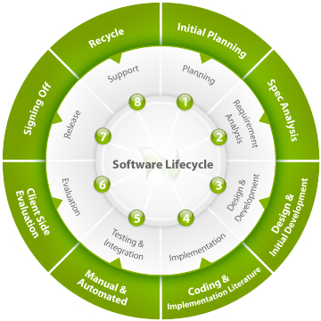

Software Engineering:

Software engineering (SE) is the application of a systematic, disciplined, quantifiable approach to the development, operation, and maintenance of software, and the study of these approaches; that is, the application of engineering to software.
It is the application of engineering to software because it integrates significant mathematics, computer science and practices whose origins are in engineering.
It is also defined as a systematic approach to the analysis, design, assessment, implementation, testing, maintenance and re engineering of software, that is, the application of engineering to software.
The term software engineering first appeared in the 1968 NATO Software Engineering Conference, and was meant to provoke thought regarding the perceived "software crisis" at the time.
Software development, a much used and more generic term, does not necessarily subsume the engineering paradigm.
Although it is questionable what impact it has had on actual software development over the last more than 40 years, the field's future looks bright according to Money Magazine and Salary.com, which rated "software engineer" as the best job in the United States in 2006.